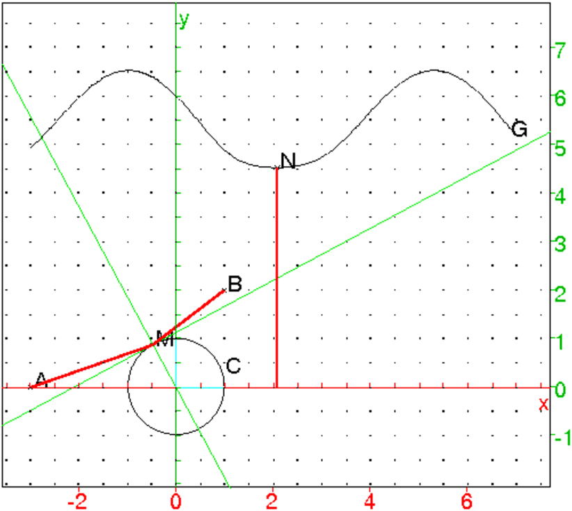
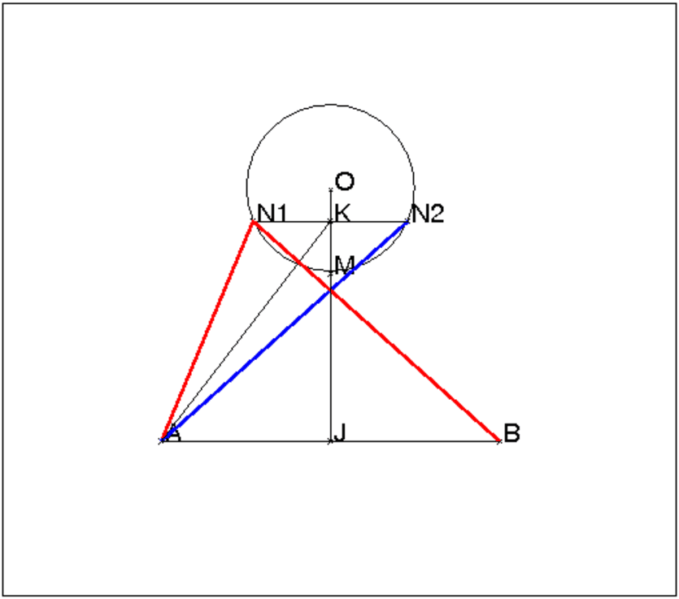
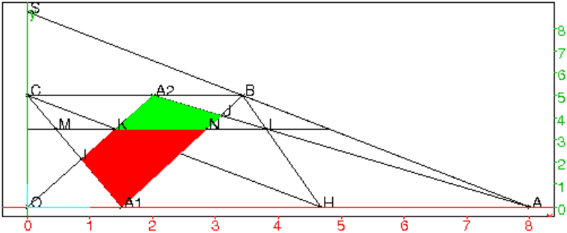
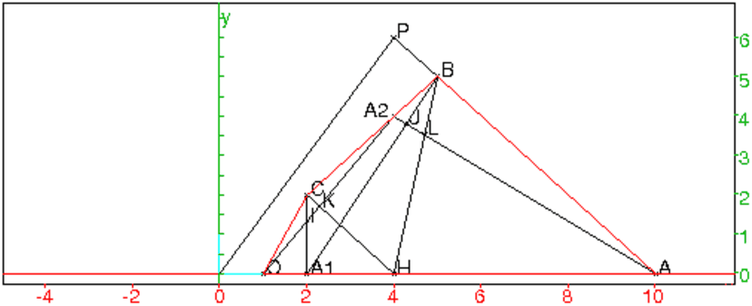
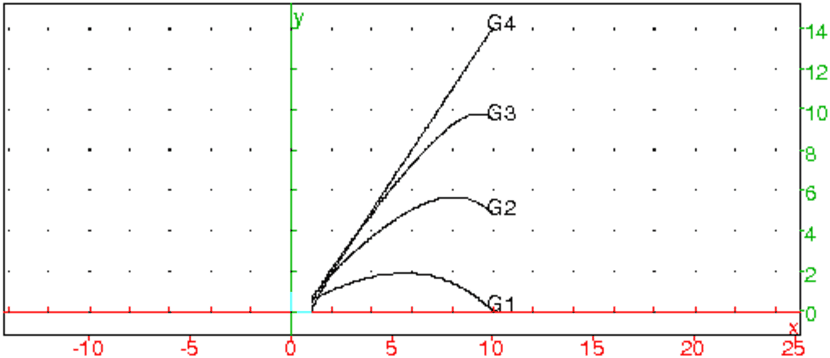
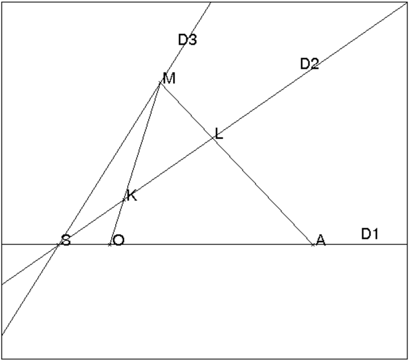
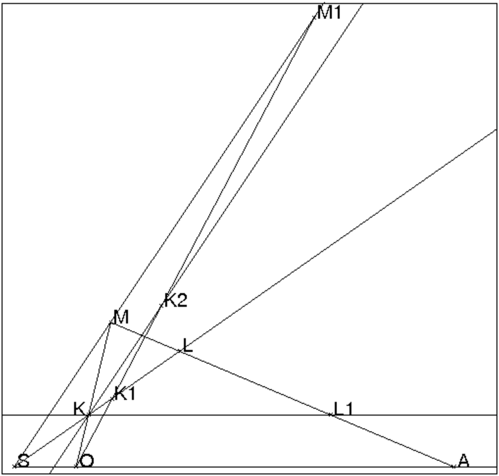
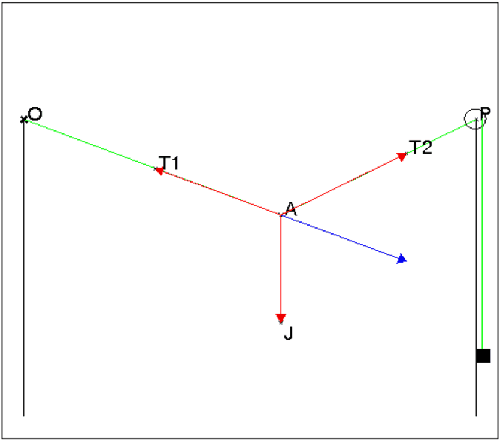

Soient deux points A et B.
Un point M se déplace sur le cercle C de centre B et de rayon 2 :
BM=2*exp(it).
On considère la fonction :
L(A,B,t)= longueur(AM)
Avec Xcas on peut avoir sur le même dessin la construction
géomètrique et le graphe de la fonction.
On clique avec la souris pour avoir les points A et B puis,
on exécute la liste des instructions qui se trouve dans geo12 ( faire Charger session du
menu Fich de Xcas et selectionner geo12 du répértoire
examples/geo pour exécuter ce fichier).
Voici le détail de geo12 :
//2pts A et B, calcul de la longueur de AE qd E=B+2*exp(i*t)
//A:=point(-2);
//B:=point(i);
C:=cercle(B,2);
définit le cercle C,
L(A,B,t):=evalf(longueur(A,B+2*exp(i*t)));
définit la fonction L,
D:=plotfunc(L(A,B,x),x);
dessine le graphe de la longueur(AM) en fonction de x (M=B+2*exp(i*x)),
t:=element(0..pi);
t est un élément que l’on pourra faire varier entre 0 et π
E:=element(cercle(B,2),t);
E est un point du cercle qui varie quand t varie,
F:=element(D,t);
F est un point du graphe qui varie quand t varie, F a donc comme ordonné la longueur de AE
Lorsqu’on fait bouger le curseur correspondant à t (situé dans la plage
grise en haut et à droite de l’écran géométrique), on fait varier E
et F simultanément.
Une famille de rectangles a pour périmètre 2p. Trouver les dimensions du
(ou des) rectangle(s) d’aire maximum.
On suppose pour faire le dessin avec Xcas que p=3.
Les cotés d’un rectangle de la famille sont donc x et 3−x ou encore
3t et 3(1−t)
L’aire d’un tel rectangle est donc égale à f(t)=9t(1−t).
On dessine les différents rectangles et le graphe de la fonction f sur un
même graphique pour pouvoir observer la variation des formes des rectangles
et la variation de leurs aires.
On exécute la liste des instructions :
A:=point(-3);
p:=3;
p est le demi-périmètre des rectangles,
K:= point(A+p);
AK=p=3
t:=element(0..1);
B:=A+t*(K-A);
B sommet du rectangle AB=t*AK donc
AB=3*t
C:=rotation(B,pi/2,K);
C est un sommet du rectangle
D:= C+A-B;
D est l’autre sommet
segment(A,B);
segment(C,B);
segment(C,D);
segment(A,D);
ces 4 segments dessinent le rectangle ABCD.
f(x):=9*x*(1-x);
définit de la fonction f égale à l’aire de ABCD.
G:=plotfunc(f(x),x);
dessine le graphe de f.
M:=element(G,t);
définit M un point du graphe, qui a comme ordonné l’aire du rectangle
ABCD.
En faisant varier t, le rectangle change de forme et le point M se
déplace sur le graphe en ayant pour ordonné l’aire du rectangle dessiné.
Remarque
Il est facile de montrer algébriquement que l’aire est maximum quand le
rectangle est un carré, c’est à dire que l’aire maximum vaut
(p/2)2=p2/4.
En effet on a :
l’aire d’un rectangle de côtés a et p−a vaut (p−a)*a=a*p−a2,
et on a p2/4≥ a*p−a2=(p/2−a)2 car p2/4−a*p+a2=(p/2−a)2 ≥ 0
Soient un rectangle ABCD de côtés a et b et c ≤ min(a,b).
Soient A1 sur le côté AB tel que AA1=c, B1 sur le côté BC tel
que BB1=c, C1 sur le côté CD tel que CC1=c et D1 sur le côté
DA tel que DD1=c. Comment choisir c pour que l’aire du parallélogramme
A1B1C1D1 soit minimum.
Ce problème se raméne au précédent en effet :
la différence entre les aires de ABCD et de A1B1C1D1 est l’aire de 4
triangles rectangles égaux deux à deux, c’est donc aussi l’aire de 2
rectangles de côtés c et a−c pour l’un et c et b−c pour l’autre
ou encore l’aire d’un rectangle de côtés c et a+b−2*c.
L’aire de ces 4 triangles rectangles vaut donc (a+b−2*c)*c.
On cherche comment choisir
c pour que l’aire du rectangle de côtés c et a+b−2*c soit maximum ou
ce qui revient au même pour que l’aire du "rectangle double" (de côtés
2*c et a+b−2*c) soit maximum. Ce rectangle double a pour périmètre
2*p=2*(a+b), donc d’après ce qui précède il faut choisir
2*c=p/2=(a+b)/2 c’est à dire c=(a+b)/4.
Un point M se déplace sur le cercle C de centre O et de
rayon 1. On choisit deux points A et B pour que la droite
AB ne coupe pas le cercle C.
On cherche dans ce cas, à minimiser le trajet AM+MB.
Avec Xcas on va faire apparaître sur le même écran, le dessin
géométrique et le graphe G de L:=longueur(AM)+longueur(MB) :
lorsque M:=exp(i*t) se déplace sur le cercle C, le point
N de coordonnèes (t,L)
se déplace sur le graphe G.
On tape :
A:=point(-3); B:=point(1+2*i); C:=cercle(0,1); t:=element(-3..7); M:=point(exp(i*t)); L(A,B,t):=evalf(longueur(A,exp(i*t))+longueur(B,exp(i*t))); G:=plotfunc(L(A,B,t),t=-3..7); //N:=element(G,t); N:=point(t,L(A,B,t)); segment(A,M,affichage=1+epaisseur_ligne_2); segment(B,M,affichage=1+epaisseur_ligne_2); segment(N,t,affichage=1+epaisseur_ligne_2); bissectrice(M,A,B); exbissectrice(M,A,B);
Ensuite lorsque l’on fait bouger t les points M et N
bougent, l’un sur le cercle C, l’autre sur le graphe G et l’on peut
voir que le minimum est atteint quand une bissectrice intérieure de l’angle
M passe par O.
On peut aussi faire varier B pour voir ce qu’il se passe quand la
droite
AB coupe C c’est à dire quand la solution est evidente...

Solution dans un cas particulier

On peut démontrer que lorsque le triangle OAB est isocéle de sommet O le point M du cercle C de centre O qui rend le trajet AM+MB minimum se trouve sur la bissectrice intérieure de l’angle AOB. En effet soient deux points N1 et N2 du cercle C symétriques par rapport à cette bissectrice (qui est aussi la médiatrice de AB). On a donc AN1=BN2 et AN2=BN1 et donc
| AN1+N1B=AN1+AN2. |
Soient K le milieu de N1N2 et J le milieu de AB.
Les points 0, K, M, J sont tous sur la médiatrice de AB et
puisque JK>JM (K milieu de la corde N1N2 et
M milieu de l’arc N1N2), on en déduit que :
| AK>AM |
| + |
| =2 |
| ||||||||||||||||||
d’aprés l’inégalité triangulaire on a
| 2AK<AN1+AN2 |
donc
| AM+MB=2AM<2AK<AN1+AN2 |
ce qui prouve que AM+MB est minimum.
La figure avec Xcas :
A:=point(-2-3*i); B:=point(2-3*i); O:=point(0);cercle(0,1); M:=point(-i); N1:=point(exp(-7*pi*i/8)); N2:=point(exp(-pi*i/8)); K:=milieu(N1,N2);J:=milieu(A,B); segment(A,N1,affichage=1+epaisseur_ligne_2); segment(A,N2,affichage=4+epaisseur_ligne_2); segment(A,M); segment(A,K); segment(N2,N1); segment(B,N1,affichage=1+epaisseur_ligne_2); segment(O,J); segment(A,B);
Le problème est le suivant :
Étant donné un rectangle ou un parallélogramme ou un trapèze OABC
avec OA//BC, on cherche la position de A1 sur le segment OA et de A2
sur le segment BC pour que l’aire de l’intersection des triangles BCA1 et
OAA2 soit maximum.
erase; xyztrange(-0.5,8.5,-0.5,10.5,-10,10,-1,6,-0.5,8.5,-0.5,10.5,1,0,1,1); rectangle(0,8,5/8); assume(a1=1); A1:=point(a1,0); assume(a2=6); A2:=point(a2,5); O:=point(0,0); A:=point(8,0); B:=point(8,5); C:=point(0,5); droite(O,A2); droite(C,A1); I:=(inter(droite(O,A2),droite(C,A1)))[0]; droite(A,A2); droite(B,A1); J:=(inter(droite(A,A2),droite(B,A1)))[0]; couleur(polygone(A1,J,A2,I),rempli+rouge); f(a1):=normal(aire(A1,J,A2,I)); plotfunc(f(x),x=0..8); S:=point(a1,f(a1)); couleur(droite(A1,S),vert); H:=point(a2,0); K:=(inter(droite(O,A2),droite(C,H)))[0]; L:=(inter(droite(A,A2),droite(B,H)))[0]; droite(H,C); droite(H,B); M:=(inter(droite(C,A1),droite(K,L)))[0]; N:=(inter(droite(B,A1),droite(K,L)))[0]; couleur(polygone(L,H,K),rempli+bleu); couleur(polygone(A1,M,N),rempli+bleu); normal(aire(H,K,L)-aire(A1,M,N));On considere au debut A2 fixe et on peut faire bouger A1 en cliquant sur le petit trait rouge a1 situé en haut et à droite de l’écran.
On trace ensuite les differents graphes en faisant varier a2 de 0 a 8,
on les voit ds l’ecran DispG en tapant DispG et en exécutant :
erase;
xyztrange(-0.5,8.5,-0.5,10.5,-10,10,-1,6,-0.5,8.5,-0.5,10.5,1,0,1,1);
f(x):=20*x2-160*x+20*a22-160*a2/x2+2*x*a2-16*x+a22-16*a2;
pour a2 de 0 jusque 8 faire nodisp(plotfunc(f(x),x=0..8)) fpour;

erase;
xyztrange(-0.5,8.5,-0.5,10.5,-10,10,-1,6,-0.5,8.5,-0.5,10.5,1,0,1,1);
rectangle(0,8,5/8);
a1:=element(0..8,2);
A1:=point(a1,0);
a2:=element(0..8,7);
A2:=point(a2,5);
O:=point(0,0);
A:=point(8,0);
B:=point(8,5);
C:=point(0,5);
segment(O,A2);
segment(C,A1);
I:=(inter(segment(O,A2),segment(C,A1)))[0];
segment(A,A2);
segment(B,A1);
J:=(inter(segment(A,A2),segment(B,A1)))[0];
H:=point(a2,0);
segment(C,H);
segment(B,H);
K:=(inter(segment(O,A2),segment(C,H)))[0];
L:=(inter(segment(A,A2),segment(B,H)))[0];
segment(2.5*i,8+2.5*i);
M:=(inter(segment(C,A1),segment(K,L)))[0];
N:=(inter(segment(B,A1),segment(K,L)))[0];
si (a1<a2) alors [couleur(polygone(A1,N,K,I),rempli+rouge),
couleur(polygone(A2,K,N,J),rempli+vert)];
sinon [couleur(polygone(A2,I,M,L),rempli+vert),
couleur(polygone(A1,J,L,M),rempli+rouge)];
fsi;
erase;
xyztrange(-0.5,8.5,-0.5,9,-10,10,-1,6,-0.5,8.5,-0.5,9,1,0,1,1);
polygone(0,8,5*i+24/7,5*i);
a1:=element(0..8,1.5);
A1:=point(a1,0);
a2:=element(0..24/7,2);
A2:=point(a2,5);
O:=point(0,0);
A:=point(8,0);
B:=point(24/7,5);
C:=point(0,5);
segment(O,A2);
segment(C,A1);
I:=(inter(segment(O,A2),segment(C,A1)))[0];
segment(A,A2);
segment(B,A1);
J:=(inter(segment(A,A2),segment(B,A1)))[0];
h:=7/3*a2;
H:=point(h,0);
segment(C,H);
segment(B,H);
S:=(inter(demi_droite(O,C),demi_droite(A,B)))[0];
segment(A,S);
segment(O,S);
K:=(inter(segment(O,A2),segment(C,H)))[0];
L:=(inter(segment(A,A2),segment(B,H)))[0];
segment(3.5*i,4.8+3.5*i);
M:=(inter(segment(C,A1),droite(K,L)))[0];
N:=(inter(segment(B,A1),segment(K,L)))[0];
si (a1<h) alors [couleur(polygone(A1,N,K,I),rempli+rouge),
couleur(polygone(A2,K,N,J),rempli+vert)];
sinon [couleur(polygone(A2,I,M,L),rempli+vert),
couleur(polygone(A1,J,L,M),rempli+rouge)];
fsi;
On obtient :
La surface rouge est inférieure à l’aire de A1NM qui est égale à
l’aire de HKL (triangle ayant des bases égales et des hauteurs égales)
et, la surface verte est inférieure à l’aire de A2KL. Donc, l’aire de
A1IA2J est inférieure à l’aire de A2KHL.
O:=point(1,0); A:=point(10,0); B:=point(5,5); C:=point(2,2); a1:=element(1..10,2); a2:=element(2..5,4); A1:=point(a1); A2:=point(a2*(1+i)); P:=inter_droite(droite(A,B),droite(O,C)); H:=inter_droite(droite(P,A2),droite(O,A)); segment(A,A2); segment(O,A2); segment(B,A1); segment(C,A1); I:=inter_droite(segment(O,A2),segment(C,A1)); J:=inter_droite(segment(A,A2),segment(B,A1)); segment(C,H); segment(B,H); K:=inter_droite(segment(O,A2),segment(C,H)); L:=inter_droite(segment(A,A2),segment(B,H)); s1:=normal(aire(polygone(A1,J,A2,I))); s2:=normal(aire(polygone(H,L,A2,K))); segment(0,P,ligne_tiret); segment(B,P,ligne_tiret); quadrilatere(O,A,B,C,affichage=rouge)On trouve :

On peut trouver la valeur de l’aire du polygone A1JA2I lorsque A2
et A1 varient (A2 entre 0 et A et A1 entre B et C) .
Pour cela on tape :
O:=point(1,0); A:=point(10,0); B:=point(5,5); C:=point(2,2); polygone(O,A,B,C); assume(a1=[2,1,10]); assume(a2=[4,1,5]); A1:=point(a1); A2:=point(a2*(1+i)); P:=inter_droite(droite(A,B),droite(O,C)); H:=inter_droite(droite(P,A2),droite(O,A)); segment(A,A2); segment(O,A2); segment(B,A1); segment(C,A1); I:=inter_droite(segment(O,A2),segment(C,A1)); J:=inter_droite(segment(A,A2),segment(B,A1)); f(a1):=normal(aire(A1,J,A2,I));
On obtient :
H=point((-(2*a2))/(a2-6),0)
on a bien si a2=2 alors H est en O et si
a2=5 alors H est en A.
f(x)=9*a23*x2+3*a22*x3+(-(96*a22))*x2+30*a22*x+90*a2*x2/2*a22*x2+(-(104*a2))*x+200
On peut faire les courbes de l’aire du polygone A1JA2I lorsque A2 est fixe
et lorsque A1 varie entre O et A. Pour cela on tape :
Pour avoir les graphes de f selon le paramètre a2, on tape
successivement :
a2:=2;G1:=plotfunc(f(x),x=1..10);
....
a2:=5;G4:=plotfunc(f(x),x=1..10);
ou bien, on tape :
f(x):=(9*a2^3*x^2+3*a2^2*x^3+(-(96*a2^2))*x^2+30*a2^2*x+90*a2*x^2)/(2*a2^2*x^2+(-(104*a2))*x+200);
L:=[];
for (a2:=2;a2<6;a2++) {L:=append(L,plotfunc(f(x),x=1..10));}
L;
On obtient :

Pour montrer que l’aire de A1JA2I est maximum lorsque A1 est en A et A2
en B, on va montrer que cette aire croit lorsque A2 est fixe et que A1
se déplace sur le segment OH de O à H. Puis on va montrer que l’aire
de HLA2K croit, lorsque A2 se déplace sur le segment CB de C à B.
Pour cela, il suffit de demontrer le lemme suivant :
Lemme
Soient trois demi-droites D1,D2,D3 de même origine S et tels que,
0<(D1,D2)<(D1,D3)<π/2. Soient deux points fixes O et A sur D1 tels
que SO<SA et un point variable M sur D3. Le segment MO coupe D2 en
K et le segment MA coupe D2 en L. Alors le segment KL
augmente lorsque le segment SM augmente.
Donc l’aire du triangle AMKL augmente avec SM puisque KL et
la hauteur relative à KL augmentent avec SM.
Voici la figure :

La démonstration du lemme peut se faire avec Xcas de façon analytique ou de façon purement géométrique.
S:=point(0); O:=point(1); assume(a=5); assume(k=2); assume(m=3); assume(t=2); A:=point(a); M:=point(t,m*t); N:=point(2*t,2*k*t):; D1:=demi_droite(S,A); D2:=demi_droite(S,N); D3:=demi_droite(S,M); K:=inter_droite(droite(M,O),D2); L:=inter_droite(droite(M,A),D2); segment(M,O); segment(M,A); l(t):=longueur2(K,L); d(t):=diff(l(t),t); factor(numer(d(t))); factor(denom(d(t)));On trouve comme numérateur :

La parallèle à D3 passant par K coupe M1O en K2 on a :
MK/MO=M1K2/M1O<M1K1/M1O puisque M1K2<M1K1.
Donc KL1 augmente lorsque SM augmente.
L’angle A augmente quand SM augmente et donc l’angle L diminue puisque
l’angle (D1,D2) est fixe. Donc puisque
KL=KL1*sin( A)/sin( L), on en déduit que KL augmente
lorsque SM augmente.
Remarque
On a le même résultat si M se trouve sur D1 et si K et L sont les
intersections des segments qui joignent M à deux points fixes C et B
de D3.
On va utiliser ce lemme en prenant pour M soit le point A2, soit le point
A1, en effet :
- si S est l’intersection des droites OA et BC, les points S,K,L sont
alignés sur la polaire de P intersection des droites OC et AB.
De plus si A1 se trouve entre O et
H, le point I est en dessous de cette droite et J se trouve au dessus
de cette droite. Cela prouve que si A1 se
trouve entre O et H, l’aire de A1JA2I est inférieure à l’aire de
HLA2K.
- lorsque A2 va de C à B, H va de O à A et l’aire de A2KLH
augmente.
Etant donné 3 points A, B, C la courbe de Bézier qui passe par A
et C en étant tangente à AB et à BC a pour
équation paramétrique :
A(1−x)2+2Bx(1−x)+Cx2 pour x ∈ [0;1].
On peut donc définir la fonction :
bezier3(A,B,C,x):={
evalf(A*(1-x)^2+2*B*x*(1-x)+C*x^2);
};
La représentation de cette équation paramétrique se fait en utilisant
la fonction
plotparam qui permet de représenter des courbes en paramétrique.
On écrit par exemple :
courb(A,B,C):={plotparam(affixe(bezier3(A,B,C,x)),x,0,1);};
On suppose que l’on met dans une liste une suite de points par exemple :
L:=[A,B,C,D,E,F,G] et on veut tracer les courbes de Bézier définies
par A, B, C puis, par C, D, E puis, par E, F, G.
On peut donc définir la fonction :
bezierl(L,x):={
local LS,A,B,C;
LS:=[];
for(j:=0;j<size(L)-2;j:=j+2){
A:=L[j];B:=L[j+1];C:=L[j+2];
LS:=append(LS,affixe(evalf(A*(1-x)^2+2*B*x*(1-x)+C*x^2)));
};
eval(LS);
};
Pour représenter cette équation paramétrique on écrit :
courbl(L):={
local LB,LS;
LS:=[];
LB:=bezierl(L,x);
for (j:=0;j<size(LB);j:=j+1) {
LS:=concat(LS,plotparam(LB[j],x,0,1));
};
return(feuille(LS));
};
Puis, on clique dans l’écran graphique pour obtenir par exemple les points
A, B, C, D, E, F, G et on tape :
courbl([A,B,C,D,E,F,G]), on obtient trois courbes de Bézier successives
(passant par A,C,E,G) et que l’on peut déformer en déplacant l’un
des points A, B, C, D, E, F, G.
Attention la liste L doit avoir un nombre impair
de points car sinon le dernier point n’est pas pris en compte...
Si on veut obtenir une courbe fermée il faut terminer la liste par le
premier élément de la liste.
On peut utiliser la commande bezier de Xcas qui existe maintenant.
Soient n+1 points Pj de contrôle (j=0..n) et L la séquence de ces
points.
La courbe de Bézier ayant les points de la séquence L comme points de
contrôle, a comme équation paramétrique :
∑j=0n comb(n,j)tj(1−t)n−j*L[j].
bezier(L,plot) renvoie le tracé de la courbe d’équation
paramétrique : ∑j=0n comb(n,j)tj(1−t)n−j*L[j].
parameq(bezier(L)) renvoie l’équation paramétrique de la courbe de
Bézier ayant comme points de contrôle les points de la séquence L.
On tape :
On obtient :
On tape :
On obtient :
On tape :
On obtient :
On tape :
On obtient :
Une application amusante du barycentre est le morphing.
Prenons tout d’abord un exemple simple :
On considère six points A, B, C, D, E, F, la courbe de Bézier
C1 définie par A, B, C et la courbe de Bézier
C2 définie par D, E, F.
Soient t ∈ [0;1] et M (resp N, P) le barycentre de (A,1−t) et de
(D,t) (resp de (B,1−t) et de (E,t), de (C,1−t) et de (F,t)).
Lorsque t varie de 0 à 1 la courbe de Bézier définie par
M, N, P se déforme en passant de C1 à C2.
On écrit la fonction baryc égale à la courbe intermédiaire de paramètre t :
baryc(A1,B1,C1,A2,B2,C2,t):={
local M1,M2,M3;
M1:=bary(A1,A2,t);
M2:=bary(B1,B2,t);
M3:=bary(C1,C2,t);
return(courb(M1,M2,M3));
};
puis, les instructions permettant de faire bouger la courbe intermédiaire :
courb(A,B,C); courb(D,E,F); t:=element(0..1); baryc(A,B,C,D,E,F,t);
Prenons maintenant l’exemple où deux courbes de Bézier sont définies par des listes de points
L1 et L2 de même longueur. On définit la liste L3
obtenue en formant le barycentre des points de L1 avec ceux de L2
affectés des coefficients 1-t et t (0 ≤ t ≤ 1).
On représente la courbe de Bézier définie par la liste L3
en faisant varier t cette courbe se déforme et passe de la courbe
définie par L1 à celle définie par L2 lorsque t varie de 0 à 1.
Voici par exemple le programme :
baryl(L1,L2,t):={
local L3,s1,s2;
s1:=size(L1);
s2:=size(L2);
if (s1 !=s2) {s1:=min(s1,s2)};
L3:=[];
for (k:=0;k<s1;k++) {
L3:=append(L3,evalf(L1[k]*(1-t)+L2[k]*t));
}
return(eval(L3));
};
ou plus simplement
barycl(L1,L2,t):=evalf(t*L2+(1-t)*L1)
Par exemple, on clique avec la souris les points :
A,B,C,D,E,F,G,H,J,K,L,M,N,O,P
Par exemple vous pouvez utiliser les points qui se trouvent dans le fichier
pointmorph
puis on exécute un fichier contenant les commandes (c’est le fichier
morphing) :
t:=element(0..1);
courbl([A,B,C,D,E,F,G,H,A]);
courbl([J,K,L,M,N,O,L,P,J]);
courbl(baryl([A,B,C,D,E,F,G,H,A],[J,K,L,M,N,O,L,P,J],t));
ou encore
courbl([A,B,C,D,E,F,G,H,A]); courbl([J,K,L,M,N,O,L,P,J]); t:=element(0..1); baryc(A,B,C,J,K,L,t); baryc(C,D,E,L,M,N,t); baryc(E,F,G,N,O,L,t); baryc(G,H,A,L,P,J,t);
On peut ensuite s’amuser à changer la valeur de t et aussi déplacer
les différents points.
On pourra se référer aux fichiers bezier qui contient les fonctions qui suivent :
// -*- mode:C++ -*-
//fonction f(0)=A f(1)=C f'(0)=AB f'(1)=BC qui renvoie 1 pt
bezier3(A,B,C,x):={
evalf(A*(1-x)^2+2*B*x*(1-x)+C*x^2);
};
//dessin de la courbe en parametrique passant par A et C
//et tgte a AB et a BC
courb(A,B,C):={plotparam(affixe(bezier3(A,B,C,x)),x,0,1);};
//fonction donnant le barycentre de (A1,1-t) et de (A2, t)
bary(A1,A2,t):={evalf(t*A2+(1-t)*A1);};
//dessin de la courbe barycentre de (courb(A1,B1,C1),1-t)
//et de (courb(A2,B2,C2),t)
//on place les 6 pts puis on definit t:=element(0..1) on peut voir
//la deformation de la courbe qd on fait varier t.
baryc(A1,B1,C1,A2,B2,C2,t):={
local M1,M2,M3;
M1:=bary(A1,A2,t);
M2:=bary(B1,B2,t);
M3:=bary(C1,C2,t);
courb(M1,M2,M3);
};
baryl(L1,L2,t):={
local L3,s1,s2;
s1:=size(L1);
s2:=size(L2);
if (s1 !=s2) return("erreur");
L3:=[];
for (k:=0;k<s1;k++) {
L3:=append(L3,bary(L1[k],L2[k],t));
}
return(eval(L3));
};
barycl(L1,L2,t):=evalf(t*L2+(1-t)*L1);
bezierl(L,x):={
local LS,A,B,C;
LS:=[];
for(j:=0;j<size(L)-2;j:=j+2){
A:=L[j];B:=L[j+1];C:=L[j+2];
LS:=append(LS,affixe(evalf(A*(1-x)^2+2*B*x*(1-x)+C*x^2)));
};
eval(LS);
};
courbl(L):={
local LB,LS;
LS:=[];
LB:=bezierl(L,x);
for (j:=0;j<size(LB);j:=j+1) {
LS:=append(LS,plotparam(LB[j],x,0,1));
};
return(feuille(LS));
};
Commençons par un exemple :
On cherche l’enveloppe des droites définies par
y−2tx−t2 lorsque t varie.
On va tracer le lieu des points d’intersection M des droites
ed d’équation y−2tx−t2=0 et des droites
ed1 d’équation −2x−2t=0 obtenue en dérivant y−2tx−t2=0 par
rapport à t.
Les instructions suivantes tracent les droites ed et ed1 de
paramètre t et le lieu de M.
Ces instructions se trouvent dans le fichier envelopp.
ed:=y-2*t*x-t^2; ed1:=derive(ed,t); M:=solve([ed,ed1],[x,y])[0]; plotparam(M[0]+i*M[1],t); t:=element(-3..3); d:=plotfunc(2*t*x-t^2,x);
On peut aussi définir la droite d’équation ay+bx+c=0 par la liste [a,b,c].
On traite alors l’exemple avec les instructions ci-dessous (elles se trouvent
dans le fichier envelopl).
//ld=[a,b,c] si ay+bx+c=0 xyztrange(-6,6,-7,4,-10,10,-3,3,-6,6,-5,1,1); purge(t); ld:=[1,-2*t,-t^2]; a:=ld[0]: b:=ld[1]; c:=ld[2]; ld1:=derive(ld,t); dpd1:=a*ld1[1]-b*ld1[0]; //dpd1=-2 <>0 donc ici ld et ld1 ne sont pas paralleles M:=(i*(-c*ld1[1]+b*ld1[2])+(c*ld1[0]-a*ld1[2]))/dpd1; plotparam(M,t); t:=element(-3..3); d:=plotfunc(2*t*x+t^2,x);
On écrit maintenant deux fonctions (enveloppe3 et enveloppe) qui tracent l’enveloppe d’une famille de droites.
La fonction enveloppe3 a trois paramètres a,b,c qui sont des fonctions de la variable t et qui représente les droites d’équation ay+bx+c=0.
//enveloppe d'une droite def par a(t),b(t),c(t) (ay+bx+c=0)
enveloppe3(a,b,c):={
local ld,ld1,dd1,M;
ld:=[a,b,c];
ld1:=derive(ld,t);
dd1:=ld[0]*ld1[1]-ld[1]*ld1[0];
if (dd1!=0) {
M:=(i*(-ld[2]*ld1[1]+ld[1]*ld1[2])+
(ld[2]*ld1[0]-ld[0]*ld1[2]))/dd1;
return(plotparam(M,t));
} else {
return("droites paralleles");
}
}
La fonction enveloppe a un paramètre d qui est :
d est l’expression a(t)y+b(t)x+c(t) (on sous-endend =0 et les
variables doivent être x,y,t).
enveloppe(d):={
local zM,a,b,c,a1,b1,c1,dpd1;
a:=derive(d,y);
b:=derive(d,x);
c:=subst(subst(d,x=0),y=0);
a1:=derive(a,t);b1:=derive(b,t);c1:=derive(c,t);
dpd1:=a*b1-b*a1;
if (dpd1!=0) {
zM:=(i*(-c*b1+b*c1)+(c*a1-a*c1))/dpd1;
return(plotparam(zM,t));
}
else
return("Droites paralleles");
};
On peut alors écrire les fichiers envelopt et envelop3t
pour avoir une figure animée : l’enveloppe E et les différentes
droites qui bougent selon les valeurs de t en restant tangentes à
E.
Voici le fichier envelop3t qui trace l’enveloppe des droites :
cos(t)*(1−cos(2t))y+sin(t)*cos(2t)x=sin(t)cos(t) :
purge(t); purge(tt); purge(x); purge(y); xyztrange(-6,6,-7,4,-10,10,-3,3,-6,6,-2,4,1); a:=cos(t)*(1-cos(2*t)); b:=sin(t)*cos(2*t); c:=-sin(t)*cos(t); enveloppe3(a,b,c); tt:=element(-3..4); aa:=subst(a,t,tt); bb:=subst(b,t,tt); cc:=subst(c,t,tt); plotfunc((-bb*x-cc)/aa,x);
Voici le fichier envelopt qui trace l’enveloppe des droites x*(cos(2*t)−cos(t))+y*(sin(2*t)−sin(t))−sin(2*t)=0 :
xyztrange(-6,6,-7,4,-10,10,-3,3,-6,6,-2,4,1); purge(x); purge(y); purge(t); purge(tt); d:=x*(cos(2*t)-cos(t))+y*(sin(2*t)-sin(t))-sin(2*t); enveloppe(d); tt:=element(-3..4); dd:=subst(d,t,tt); aa:=derive(dd,y); bb:=derive(dd,x); cc:=subst(subst(dd,x=0),y=0); plotfunc((-bb*x-cc)/aa,x);
Un "jean" de poids j est accroché en A à un étendage spécial :
l’un des poteaux de l’étendage possède une poulie P !
Le fil de l’étendage passe sur la poulie et est accroché à l’autre
poteau en O. On suppose que la masse du fil est négligeable.
Quel poids faut-il mettre au bout du fil pour avoir un équilibre ?

Dans ce qui suit on suppose que :
- le "jean" pèse j unités et on note J=(0,−j),
- les deux poteaux sont distants de l,
- on choisit le repère Oxy pour que la poulie P ait comme coordonnées
(0,l),
- le "jean" est fixé au point A de coordonnées (a,b) dans le repère Oxy,
- le poids est de p unités.
Quelles sont alors les positions d’équilibre du "jean" ?
Si T1=(t11,t12) est la tension du fil AP et
si T2=(t21,t22) est la tension du fil AO, on a :
T1+T2+J=0 et p2=||T1||2
donc :
t11+t21=0, t12+t22−j=0 et p2=t112+t122.
T1 est dirigé selon AP donc −b/(l−a)=t12/t11,
T2 est dirigé selon AO donc −b/(−a)=t22/t21.
On remarquera que le problème n’est pas le même selon que le pantalon
coulisse sur le fil ou qu’il est fixé sur le fil par une pince à linge :
- si le pantalon coulisse sur le fil les deux tensions
T1 et T2 ont même module.
On tape :
solve([t11+t21=0,t12+t22-j=0,t112+t122=t212+t222],
[t11,t12,t21,t22])
On obtient :
[[-t21,j/2,t21,j/2]]
ce qui signifie que T1 et T2 sont
symétriques par rapport à la verticale et donc que OA=AP.
On tape pour déterminer le poids p en fonction de j,l,a,b :
solve([t11+t21=0,t12+t22-j=0,t112+t122=t212+t222,
b/a=t22/t21,p2=t112+t122],[p,t11,t12,t21,t22])
On obtient :
[[sqrt(4*b4*j2+4*b2*j2*a2)/(4*b2),(-(j*a))/(2*b),j/2,j*a/(2*b),j/2],
[(-(sqrt(4*b4*j2+4*b2*j2*a2)))/(4*b2),(-(j*a))/(2*b),j/2,j*a/(2*b),j/2]]
- si le pantalon est fixé en A (par exemple au moyen d’une pince à linge),
il faut supprimer l’équation t112+t122=t212+t222 et rajouter :
-b/(l-a)=t12/t11.
On tape :
normal(solve([t11+t21=0,t12+t22-j=0,b/a=t22/t21,
-b/(l-a)=t12/t11,t112+t122=p2],[p,t11,t12,t21,t22])[1][0])
On obtient :
(sqrt(l2+-2*l*a+a2+b2)*abs(l)*abs(b)*abs(j)*abs(a))/(l2*b2)
On a donc : p2=j2*a2*((l−a)2+b2)/(l2*b2),
d’où b2=j2*a2*(−l+a)2/(p2*l2−j2*a2).
L’ordonnée de A est négative, l’équation de la courbe d’équilibre est :
b:=-sqrt((a^2*(-l+a)^2*j^2)/(p^2*l^2-j^2*a^2));.
Pour simuler la situation on écrit les instructions suivantes dans le fichier
pantalon.
Ces instructions permettent de faire varier les paramètres j,p et a.
Voici le fichier pantalon.
switch_axes(0);
xyztrange(-1,10,-7,1,-10,10,-1,6,-1,10,-7,1,0);
p:=element(0..5);
h:=2;//hauteur des poteaux
l:=8;//distance entre les poteaux
f:=l+5;//longueur du fil
j:=element(1..3);//poids du jean
segment(l-h*i,l);P;=point(l,0);//dessin d'un poteau
segment(-h*i,0);O:=point(0,0);//dessin de l'autre poteau
y:=-sqrt((x^2*(-l+x)^2*j^2)/(p^2*l^2-j^2*x^2));
//m:=min(l,p*l/j);
//plotfunc(y,x,0,m);
a:=element(0..l);
b:=-sqrt((a^2*(-l+a)^2*j^2)/(p^2*l^2-j^2*a^2));
A:=point(a,b);
couleur(segment(A,0),2);
couleur(segment(A,l),2);
ap:=sqrt((l-a)^2+b^2);
ao:=sqrt(a^2+b^2);
c:=ao+ap;
//dessin des forces
couleur(vecteur(A,a+(b-j)*i),1);
couleur(vecteur(A,A+(l-a-b*i)*p/sqrt((-l+a)^2+b^2)),1);
couleur(vecteur(A,A+(-l+a+b*i)*p/sqrt((-l+a)^2+b^2)+j*i),1);
couleur(vecteur(A,A+(l-a-b*i)*p/sqrt((-l+a)^2+b^2)-j*i),4);
T1:=A+(l-a-b*i)*p/sqrt((-l+a)^2+b^2);
T2:=A+(-l+a+b*i)*p/sqrt((-l+a)^2+b^2)+j*i;
J:=A+(-j)*i;
//dessin de la poulie
cercle(l,0.2);
//dessin du poids p
if (c<f){
[couleur(segment(l+0.1,l+0.1+i*(c-f)),2),
couleur( segment(l+i*(c-f),l+i*(c-f-p/10)),1),
couleur( segment(l+0.2+i*(c-f),l+0.2+i*(c-f-p/10)),1),
couleur( segment(l+0.2+i*(c-f),l+i*(c-f)),1),
couleur( segment(l+0.2+i*(c-f-p/10),l+i*(c-f-p/10)),1)];
};
On peut aussi utiliser le tableur pour avoir des valeurs numériques.
On a p2=j2*x2*((−l+x)2+y2)/(l2*y2).
On définit la fonction g (égale à p par :
g(j,l,x,y)=j*x*sqrt((-l+x)2+y2)/(l*y)
Ne pas oublier auparavant de purger les variables j,l,x,y !
Puis on ouvre le tableur (on tape Alt+t pour ouvrir le tableur).
On tape par exemple :
table g(3.0,8,4,y),y) et on complète la table....
On peut recopier la deuxième colonne :
on sélectionne la deuxième colonne puis
on se place en début de colonne et on clique sur coller.
Si on veut voir l’influence de l on met comme formule dans la troisième
case :
g(3.0,4,2,y),y) et on change la formule (=eval(subst..) comme
ci-dessous...
On obtient :
| A | B | C | |
| 0 | y | g(3,8,4,y) | g(3,4,2,y) |
| 1 | 0.1 | "Table" | 0 |
| 2 | 0 | =eval(subst(B$0,$A$0,$A2)) | =eval(subst(C$0,$A$0,$A2)) |
| 3 | =A2+A$1 | =eval(subst(B$0,$A$0,$A3)) | =eval(subst(C$0,$A$0,$A3)) |
| 4 | =A3+A$1 | =eval(subst(B$0,$A$0,$A4)) | =eval(subst(C$0,$A$0,$A4)) |
| 5 | =A4+A$1 | =eval(subst(B$0,$A$0,$A5)) | =eval(subst(C$0,$A$0,$A5)) |
| 6 | =A5+A$1 | =eval(subst(B$0,$A$0,$A6)) | =eval(subst(C$0,$A$0,$A6)) |
| 7 | =A6+A$1 | =eval(subst(B$0,$A$0,$A7)) | =eval(subst(C$0,$A$0,$A7)) |
| 8 | =A7+A$1 | =eval(subst(B$0,$A$0,$A8)) | =eval(subst(C$0,$A$0,$A8)) |
| 9 | =A8+A$1 | =eval(subst(B$0,$A$0,$A9)) | =eval(subst(C$0,$A$0,$A9)) |
=
| A | B | C | |
| 0 | y | 12 √16+y2/8 y | 6 √4+y2/4 y |
| 1 | 0.1 | Table | 0 |
| 2 | 0 | ∞ | ∞ |
| 3 | 0.1 | 60.0187470712 | 30.0374765918 |
| 4 | 0.2 | 30.0374765918 | 15.0748134317 |
| 5 | 0.3 | 20.0561711201 | 10.1118742081 |
| 6 | 0.4 | 15.0748134317 | 7.64852927039 |
| 7 | 0.5 | 12.0933866224 | 6.18465843843 |
| 8 | 0.6 | 10.1118742081 | 5.22015325446 |
| 9 | 0.7 | 8.70168878753 | 4.54063287866 |
On voit l’influence de la longueur du fil : si j=3, pour avoir A au
point de coordonées (l/2,−0.1)), il faut avoir p=60 si l=8 et p=30 si l=4.
On définit la fonction equi qui est l’ordonnée de A par :
equi(j,l,p,x):=-sqrt(j2*x2*(x-l)2/(p2*l2-j2*x2))
On tape le fichier suivant :
xyztrange(0,8,-7,1,-10,10,-1,6,0.,8,-7,1,1);
L:=plotfunc(equi(3,8,1,x),x,0,8/3);
for (p:=2;p<10;p:=p+1) {
m:=min(8,8*p/3);
L:=L,plotfunc(equi(3,8,p,x),x,0,m);
};
L;
On obtient les diffèrentes courbes d’équilibre lorsque le poids p
varie (on peut vérifier que limit(equi(3,8,3,x),x,8)=0)